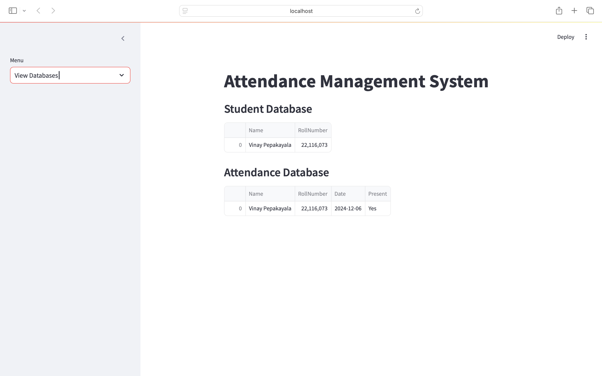
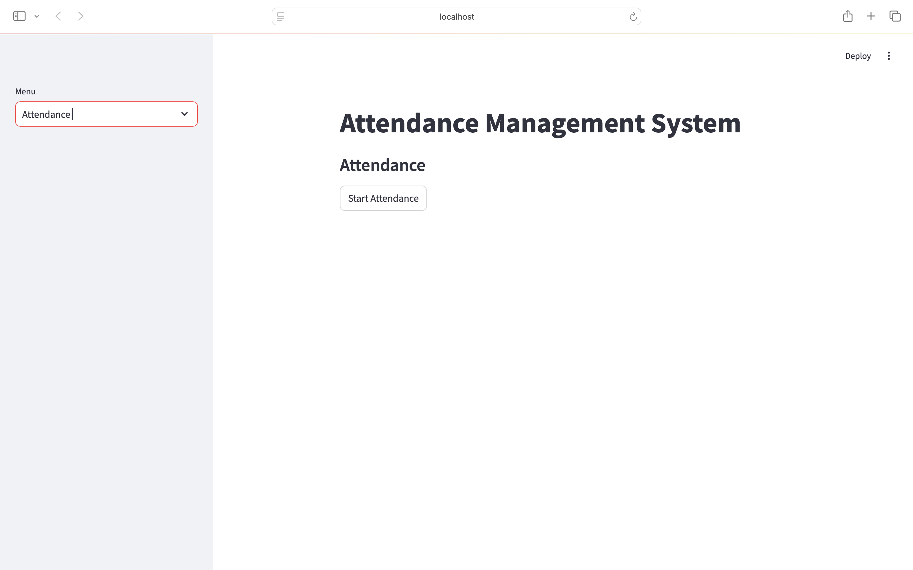

Attendance Management System Using Face Recognition
Automate your attendance management with face recognition and make your workflow smarter!

Introduction
Manual attendance tracking is time-consuming and prone to errors. This project solves that by using facial recognition to automate the process. Built with Python, OpenCV, and Streamlit, it provides a user-friendly web app for students and administrators.
What is Face Recognition?
Face recognition is a computer vision technique that identifies or verifies a person from a digital image or video frame. It works by detecting faces, extracting features, and comparing them to known faces in a database. Here, OpenCV's face recognition is used to identify students and mark their attendance.
Key Features
- Student Registration: Enter name and roll number, capture images via webcam for accurate recognition.
- Model Training: Processes images and trains a face recognition model to distinguish students.
- Real-Time Attendance: Scans faces in real time and marks attendance automatically.
- Database Viewing: View/manage student and attendance records through the app interface.
How Does It Work?
- Registering a Student: Launch the app with
streamlit run app.py, select "Register Student," enter details, and capture images.
- Training the Model: The system processes images, detects faces, extracts features, and updates the recognition model.
- Marking Attendance: Select "Attendance," start webcam, and the system marks attendance for recognized faces.
- Viewing Databases: View all registered students and attendance records in the app.

File Structure
- app.py: Main Streamlit app (UI and logic)
- takeimages.py: Capture student images
- train.py: Train the face recognition model
- test.py: Run recognition and mark attendance
- requirements.txt: Python dependencies
- students.csv: Student info
- attendance.csv: Attendance records
- TrainingImage/: Captured images
- TrainingImageLabel/: Trained model and labels
How to Set Up and Use
- Install dependencies:
pip install -r requirements.txt
- Run the app:
streamlit run app.py
- Register students and capture images
- Model trains automatically after registration
- Start attendance and mark presence via webcam
- View all records in the app
Frequently Asked Questions
What if the system doesn't recognize a student?
Ensure clear images during registration. Try again with better lighting and angles.
Can I add more students later?
Yes, register new students anytime. The model updates automatically.
Is my data safe?
All data is stored locally in CSV files. No uploads online.
What if I don't have a webcam?
A webcam is required for capturing and recognizing faces.
How Face Recognition Works (Technical Overview)
- Face Detection: Uses Haar Cascade classifier (OpenCV) to find faces.
- Feature Extraction: Extracts unique facial features.
- Model Training: Trains an LBPH recognizer on features.
- Recognition: Compares new faces to database and finds matches.
Machine Learning Models Used
1. Haar Cascade Classifier (Face Detection)
- What is it? Machine learning-based object detection, pre-trained on face/non-face images.
- Why use it? Fast, lightweight, real-time, easy to use.
- What does it do? Detects faces in frames for recognition.
2. LBPH Face Recognizer (Face Recognition)
- What is it? Local Binary Patterns Histograms algorithm for face recognition.
- Why use it? Robust to lighting/expressions, works with small datasets, fast.
- What does it do? Converts faces to histograms and matches them for recognition.
Why not deep learning? Deep models need large datasets and GPUs. For small, real-time projects, classical models are more practical.
Summary Table
| Model | Purpose | Why Chosen? |
|---|
| Haar Cascade | Face Detection | Fast, lightweight, real-time, easy to use |
| LBPH Face Recognizer | Face Recognition | Robust, simple, works with small datasets |
Acknowledgements
- OpenCV for image processing and facial recognition
- Streamlit for the web interface
Automate your attendance management with face recognition and make your workflow smarter!